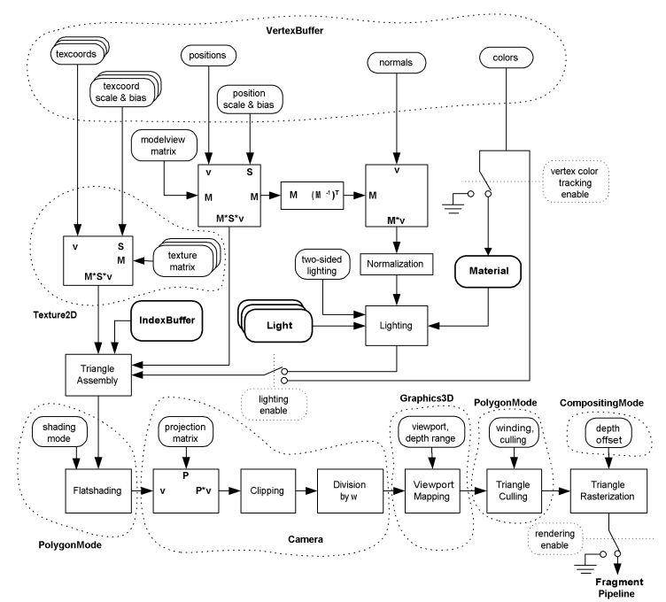

|
Nov 19, 2003 | ||||||||||
| PREV CLASS NEXT CLASS | FRAMES NO FRAMES | ||||||||||
| SUMMARY: NESTED | FIELD | CONSTR | METHOD | DETAIL: FIELD | CONSTR | METHOD | ||||||||||
java.lang.Object | +--javax.microedition.m3g.Graphics3D
A singleton 3D graphics context that can be bound to a rendering target.
All rendering is done through the render methods in this class,
including the rendering of World objects. There is no other way to draw
anything in this API.
Using the Graphics3D is very straightforward. The application only needs to obtain the Graphics3D instance (there is only one), bind a target to it, render everything, and release the target. This is shown in the code fragment below.
public class MyCanvas extends Canvas
{
Graphics3D myG3D = Graphics3D.getInstance();
public void paint(Graphics g) {
try {
myG3D.bindTarget(g);
... update the scene ...
... render the scene ...
} finally {
myG3D.releaseTarget();
}
}
There are four different render methods, operating at
different levels of granularity. The first method is for rendering an
entire World. When this method is used, we say that the API operates in
retained mode. The second method is for rendering scene graph
nodes, including Groups. The third and fourth methods are for rendering
an individual submesh. When the node and submesh rendering methods are
used, the API is said to operate in immediate mode.
There is a current camera and an array of current lights
in Graphics3D. These are used by the immediate mode rendering methods only.
The retained mode rendering method render(World) uses the camera
and lights that are specified in the World itself, ignoring the Graphics3D
camera and lights. Instead, render(World) replaces the
Graphics3D current camera and lights with the active camera and lights in the
rendered World. This allows subsequent immediate mode rendering to utilize
the same camera and lighting setup as the World.
Before rendering anything or even clearing the screen, the
application must bind a rendering target to this Graphics3D,
using the bindTarget method. When finished with rendering
a frame, the application must release the rendering target by calling
the releaseTarget method. Implementations may queue
rendering commands and only execute them when the target is released.
The rendering target can be either a Graphics object or an Image2D.
The type of the Graphics object is specific to the Java profile that
this API is implemented on. In case of the MID profile, it must be a
javax.microedition.lcdui.Graphics object, and it may be
associated with a Canvas, mutable Image, or CustomItem.
Once a rendering target is bound to the Graphics3D, all rendering
will end up in the color buffer of its rendering target until
releaseTarget is called. The contents of the rendering
target, after releasing it, will be equal to what they were before
the target was bound, augmented with any 3D rendering performed while
it was bound.
There can be only one rendering target bound to the Graphics3D at a time. Also, a bound rendering target should not be accessed via any other interface than the host Graphics3D. This is not enforced, but the results are unpredictable otherwise. For example, the following scenarios will result in unpredictable output:
render method.The contents of the depth buffer are unspecified after
bindTarget, and they are discarded after
releaseTarget. In order to clear depth buffer contents
(and color buffer contents, if so desired) after binding a rendering
target, the application must call the clear method,
either explicitly, or implicitly by rendering a World.
The viewport can be freely positioned relative to the rendering target,
without releasing and re-binding the target. The position of the viewport
is specified relative to the origin of the rendering target. For Graphics
targets, this is the origin in effect when calling bindTarget;
for Image2D targets, the origin is always at the top left corner. Changing
the origin of a bound Graphics object has no effect.
All 3D rendering is clipped to visible part of the viewport, that is,
the intersection of the viewport specified in setViewport
and the rendering target clip rectangle. Rendering operations (including
clear) must not touch pixels falling outside of the visible
part of the viewport. This is illustrated in the figure below.
For Graphics targets, the clipping rectangle is the MIDP/AWT clipping
rectangle that is in effect when calling bindTarget. Similar
to the origin, changing the clipping rectangle of a bound Graphics object
has no effect. For Image2D targets, the clipping rectangle comprises all
pixels in the target image.
Origin translation and clipping are independent of the viewport and projection transformations, as well as rasterization. All other parameters being equal, rendering calls must produce the same pixels (prior to clipping) into the area bounded by the viewport regardless of the position of the viewport or the target clipping rectangle.
Note that when we refer to the viewport in this specification, we occasionally mean only the visible part of it. If it is not obvious from the context whether we mean the full viewport or just the visible portion, we state that explicitly.
In some situations, image quality might be more important for an application than rendering speed or memory usage. Some applications might also want to increase or decrease the image quality based on device capabilities. Some might go so far as to dynamically adjust the quality; for instance, by displaying freeze frames or slow-motion sequences in higher quality.
There are three global options in Graphics3D that allow applications to indicate a preference for higher rendering quality at the expense of slower speed and/or extra memory usage. These are the following:
releaseTarget.releaseTarget).releaseTarget. True color rendering is especially useful
when combined with dithering.These options are merely hints, meaning that implementations
may silently ignore them. The application can use getProperties to find out whether a particular hint is supported
(acted upon) by the implementation. It is only meaningful for the
implementation to support a hint if that allows the application to
trade performance for quality or vice versa. For example, if dithering
is built into the display hardware and is always enabled, the
implementation should not indicate support for the dithering
hint. Similarly, if the device has a 24 bpp display, the implementation
should not support the true color hint (unless, of course, it uses even
higher color precision in the back buffer).
The rendering quality hints can be set in conjunction with binding a
rendering target, that is, using bindTarget.
The reference geometry and fragment pipelines are shown below. The mapping of Appearance components to the pipeline stages is also shown. Note that the ordering of the stages is the same as in OpenGL.
Implementations may optimize their operation by doing things in a different order, but only if the result is exactly the same as it would be with the reference pipelines.
See the package description for general implementation requirements, definitions of coordinate systems, and other background information.
The format and bit depth of the depth buffer are specific to each implementation and are not known to the application. However, the depth buffer resolution must be at least 8 bits. The contents of the depth buffer are never exposed through the API, so implementations may choose not to use a conventional depth buffer at all. However, a conforming implementation is required to behave as if it were using an ordinary depth buffer.
The resolution of each color channel (R, G, B and A) in the color buffer must be at least 1 bit. Not all color channels are necessarily present; for example, the alpha channel is missing from Canvas and Image targets in MIDP. On a device with a black and white display, there may be only one channel, representing the luminance. In such a situation, the conversion of RGB colors into luminance can be done at any point in the pipeline, provided that the conversion is done according to the general rules set forth in the package description.
The clear and render(World) methods impose
the restriction that the background image must be in the same format as
the bound rendering target. It is worth highlighting that when bound
to a MIDP Graphics object, the effective format can only be RGB (never
RGBA) due to restrictions in the MIDP specification. It is also true
that the MIDP Graphics object appears to be an RGB target even when the
physical display is in fact monochrome. This reduces the complexity of
application development considerably, since an RGB format image is
valid for any binding to a MIDP target. Other target platforms may
or may not be similarly specified.
It is intentionally unspecified whether a separate back buffer should be allocated for colors or not. Instead, we leave the implementation to decide which mode of operation is the most efficient, or which produces the best quality, according to the screen dimensions and speed versus quality preferences given by the application.
The decision whether to allocate any back buffer memory should be made at the latest when a new rendering target is first bound to the Graphics3D object. A previously bound rendering target is considered to be "new" when the rendering quality hints or the dimensions of the clipping rectangle have changed. In the case of a Graphics target, the actual rendering target is considered to be the Canvas, Image or other surface that the Graphics is attached to. The motivation for this rule is to guarantee that repeated rebinding of a rendering target - or several different rendering targets - will not incur the performance penalty of reallocating back buffer memory.
As an example of when a back buffer may be desired, consider a case
where the application specifies setDitheringEnable(true) and
subsequently binds a Canvas target. If the MIDP native color format is of
low precision (such as RGB444), the implementation may wish to render at a
higher color precision to a back buffer, then dither down to the MIDP native
color format.
public class MyCanvas extends Canvas { World myWorld; int currentTime = 0; public MyCanvas() throws IOException { // Load an entire World. Proper exception handling is omitted // for clarity; see the class description of Loader for a more // elaborate example. Object3D[] objects = Loader.load("http://www.example.com/myscene.m3g"); myWorld = (World) objects[0]; } // The paint method is called by MIDP after the application has issued // a repaint request. We draw a new frame on this Canvas by binding the // current Graphics object as the target, then rendering, and finally // releasing the target. protected void paint(Graphics g) { // Get the singleton Graphics3D instance that is associated // with this midlet. Graphics3D g3d = Graphics3D.getInstance(); // Bind the 3D graphics context to the given MIDP Graphics // object. The viewport will cover the whole of this Canvas. g3d.bindTarget(g); // Apply animations, render the scene and release the Graphics. myWorld.animate(currentTime); g3d.render(myWorld); // render a view from the active camera g3d.releaseTarget(); // flush the rendered image currentTime += 50; // assume we can handle 20 frames per second } }
| Field Summary | |
static int |
ANTIALIAS
A parameter to bindTarget, specifying that
antialiasing should be turned on. |
static int |
DITHER
A parameter to bindTarget, specifying that
dithering should be turned on. |
static int |
TRUE_COLOR
A parameter to bindTarget, specifying that true
color rendering should be turned on. |
| Method Summary | |
int |
addLight(Light light,
Transform transform)
Binds a Light to use in subsequent immediate mode rendering. |
void |
bindTarget(java.lang.Object target)
Binds the given Graphics or mutable Image2D as the rendering target of this Graphics3D. |
void |
bindTarget(java.lang.Object target,
boolean depthBuffer,
int hints)
Binds the given Graphics or mutable Image2D as the rendering target of this Graphics3D. |
void |
clear(Background background)
Clears the viewport as specified in the given Background object. |
static Graphics3D |
getInstance()
Retrieves the singleton Graphics3D instance that is associated with this application. |
static java.util.Hashtable |
getProperties()
Retrieves implementation specific properties. |
void |
releaseTarget()
Flushes the rendered 3D image to the currently bound target and then releases the target. |
void |
render(Node node,
Transform transform)
Renders the given Sprite3D, Mesh, or Group node with the given transformation from local coordinates to world coordinates. |
void |
render(VertexBuffer vertices,
IndexBuffer triangles,
Appearance appearance,
Transform transform)
Renders the given submesh with the given transformation from local coordinates to world coordinates. |
void |
render(VertexBuffer vertices,
IndexBuffer triangles,
Appearance appearance,
Transform transform,
int scope)
Renders the given submesh with the given scope and the given transformation from local coordinates to world coordinates. |
void |
render(World world)
Renders an image of world as viewed by the
active camera of that World. |
void |
resetLights()
Clears the array of current Lights. |
void |
setCamera(Camera camera,
Transform transform)
Sets the Camera to use in subsequent immediate mode rendering. |
void |
setDepthRange(float near,
float far)
Specifies the mapping of depth values from normalized device coordinates to window coordinates. |
void |
setLight(int index,
Light light,
Transform transform)
Binds or unbinds a Light for subsequent immediate mode rendering. |
void |
setViewport(int x,
int y,
int width,
int height)
Specifies a rectangular viewport on the currently bound rendering target. |
| Methods inherited from class java.lang.Object |
equals, getClass, hashCode, notify, notifyAll, toString, wait, wait, wait |
| Field Detail |
public static final int ANTIALIAS
A parameter to bindTarget, specifying that
antialiasing should be turned on. The application may query
from getProperties whether this hint is acted upon
by the implementation.
public static final int DITHER
A parameter to bindTarget, specifying that
dithering should be turned on. The application may query from
getProperties whether this hint is acted upon by
the implementation.
public static final int TRUE_COLOR
A parameter to bindTarget, specifying that true
color rendering should be turned on. The application may query
from getProperties whether this hint is acted upon
by the implementation.
| Method Detail |
public static final Graphics3D getInstance()
Retrieves the singleton Graphics3D instance that is associated with this application. The same instance will be returned every time.
Initially, the state of the Graphics3D instance is as follows:
bindTarget)
public void bindTarget(java.lang.Object target)
Binds the given Graphics or mutable Image2D as the rendering target of this Graphics3D. The type of the Graphics object depends on the Java profile that this specification is implemented on, as follows:
java.awt.Graphics on profiles supporting AWT;javax.microedition.lcdui.Graphics on profiles
supporting LCDUI;The state of this Graphics3D after calling this method will be as follows:
The viewport is set such that its top left corner is at the
top left corner of the target clipping rectangle, and its
dimensions are equal to those of the clipping rectangle. However,
if this would cause the width or height of the viewport to exceed
its implementation defined maximum, the dimension in question is
set to the maximum value instead. The maximum viewport size can be
queried with getProperties.
Note that this method will not block waiting if another thread has already bound a rendering target to this Graphics3D. Instead, it will throw an exception. Only one target can be bound at a time, and it makes no difference whether that target has been bound from the current thread or some other thread.
target - the Image2D or Graphics object to receive the rendered
image
java.lang.NullPointerException - if target is null
java.lang.IllegalStateException - if this Graphics3D already has a
rendering target
java.lang.IllegalArgumentException - if target is not
a mutable Image2D object or a Graphics object appropriate
to the underlying Java profile
java.lang.IllegalArgumentException - if target is an Image2D
with an internal format other than RGB or
RGBAreleaseTarget()
public void bindTarget(java.lang.Object target,
boolean depthBuffer,
int hints)
Binds the given Graphics or mutable Image2D as the rendering target
of this Graphics3D. This method is identical to the simpler variant of
bindTarget, but allows the depth buffering enable flag and
the rendering quality hints to be specified. See the class description
for more information on these.
If the depth buffer is disabled, depth testing and depth writing are implicitly disabled for all objects, regardless of their individual CompositingMode settings.
target - the Image2D or Graphics object to receive the
rendered imagedepthBuffer - true to enable depth buffering;
false to disablehints - an integer bitmask specifying which rendering quality
hints to enable, or zero to disable all hints
java.lang.NullPointerException - if target is null
java.lang.IllegalStateException - if this Graphics3D already has a
rendering target
java.lang.IllegalArgumentException - if target is not
a mutable Image2D object or a Graphics object appropriate
to the underlying Java profile
java.lang.IllegalArgumentException - if target is an Image2D
with an internal format other than RGB or
RGBA
java.lang.IllegalArgumentException - if hints is not zero
or an OR bitmask of one or more of ANTIALIAS, DITHER,
TRUE_COLORreleaseTarget()public void releaseTarget()
Flushes the rendered 3D image to the currently bound target and
then releases the target. This ensures that the 3D image is actually
made visible on the target that was set in bindTarget.
Otherwise, the image may or may not become visible.
java.lang.IllegalStateException - if this Graphics3D does not have a
rendering target
public void setViewport(int x,
int y,
int width,
int height)
Specifies a rectangular viewport on the currently bound rendering target. The viewport is the area where the view of the current camera will appear. Any parts of the viewport that lie outside the boundaries of the target clipping rectangle are silently clipped off; however, this must simply discard the pixels without affecting projection. The viewport upper left corner (x, y) is given relative to the origin for a Graphics rendering target, or the upper left corner for an Image2D target. Refer to the class description for details.
The viewport mapping transforms vertices from normalized device coordinates (xndc, yndc) to window coordinates (xw, yw) as follows:
xw = 0.5 xndc w + ox
yw = -0.5 yndc h + oy
where w and h are the width and height of the viewport, specified in pixels, and (ox, oy) is the center of the viewport, also in pixels. The center of the viewport is obtained from the (x, y) coordinates of the top left corner as follows:
ox = x + 0.5 w
oy = y + 0.5 h
x - X coordinate of the viewport upper left corner, in pixelsy - Y coordinate of the viewport upper left corner, in pixelswidth - width of the viewport, in pixelsheight - height of the viewport, in pixels
java.lang.IllegalArgumentException - if width or
height is negative or zero (note that
x and y may have any value)
java.lang.IllegalArgumentException - if the size of the viewport exceeds the
implementation defined maximum size in either dimension; the
maximum size can be queried with getProperties
public void setDepthRange(float near,
float far)
Specifies the mapping of depth values from normalized device coordinates to window coordinates. Window coordinates are used for depth buffering.
Depth values may range from -1 to 1 in normalized device coordinates (NDC), and from 0 to 1 in window coordinates. By default, the whole [0, 1] range of window coordinates is used. This method allows the normalized device coordinates [-1, 1] to be mapped to a "tighter" interval of window coordinates, for example, (0.5, 1].
Formally, the Z coordinate of a vertex in NDC, zndc, is transformed to window coordinates (zw) as follows:
zw = 0.5 (far - near) (zndc + 1) + near
where near and far are the distances,
in window coordinates, to the near and far plane of the depth range,
respectively. Both distances must be in [0, 1]. However, it is not
necessary for the near plane to be closer than the far plane; inverse
mappings are also acceptable.
near - distance to the near clipping plane, in window coordinatesfar - distance to the far clipping plane, in window coordinates
java.lang.IllegalArgumentException - if (near < 0) ||
(near > 1)
java.lang.IllegalArgumentException - if (far < 0) ||
(far > 1)public void clear(Background background)
Clears the viewport as specified in the given Background object. If the background object is null, the default settings are used. That is, the color buffer is cleared to transparent black, and the depth buffer to the maximum depth value (1.0).
background - a Background object defining which buffers to clear
and how, or null to use the default settings
java.lang.IllegalArgumentException - if the background image in
background is not in the same format as
the currently bound rendering target
java.lang.IllegalStateException - if this Graphics3D does not have a
rendering targetpublic void render(World world)
Renders an image of world as viewed by the
active camera of that World. The node transformation of the
World is ignored, but its other attributes are respected.
Contrary to the immediate mode render variants,
this method automatically clears the color buffer and the depth
buffer according to the Background settings of the World.
Prior to rendering, the current camera and lights set in this
Graphics3D are automatically overwritten with the active camera
and lights of the World. Upon method return, the lights array
will contain precisely those Light nodes whose effective rendering
enable flag is true (see Node.setRenderingEnable(boolean)).
The Lights are written to the array in undefined order, but such
that there are no empty slots interleaved within non-empty slots
and the first Light is at index 0.
For any node that is rendered, if the transformation from that node's local coordinates to the camera space is not invertible, the results of lighting and fogging are undefined.
world - the World to render
java.lang.NullPointerException - if world is null
java.lang.IllegalStateException - if this Graphics3D does not have a
rendering target
java.lang.IllegalStateException - if world has no active
camera, or the active camera is not in that world
java.lang.IllegalStateException - if the background image of
world is not in the same format as the
currently bound rendering target
java.lang.IllegalStateException - if any Mesh that is rendered violates
the constraints defined in Mesh, MorphingMesh, SkinnedMesh,
VertexBuffer, or IndexBuffer
java.lang.ArithmeticException - if the transformation from the
active camera of world to the world
space is uninvertible
public void render(Node node,
Transform transform)
Renders the given Sprite3D, Mesh, or Group node with the given transformation from local coordinates to world coordinates. The node transformation of the given node is ignored, but its other attributes are respected.
Any ancestors of the given node are ignored, as well as their transformations and other attributes. The node's descendants, if any, are rendered as usual. However, any Camera and Light nodes among the descendants are ignored and the camera and lights of this Graphics3D are used instead.
The scope masks of the current Lights and Camera are respected, as well as the rendering enable flags of the Lights. The rendering enable flag of the Camera is ignored, as always.
Note that Mesh nodes include MorphingMesh and SkinnedMesh nodes, and that Group nodes include World nodes. If a World is passed to this method, it is simply treated like any other Group and therefore any Background, Camera and Light objects it may have are ignored.
This method does not clear the color and depth buffers;
the application must explicitly clear them with the clear method and/or draw any background graphics beforehand.
For any node that is rendered, if the transformation from that node's local coordinates to the camera space is not invertible, the results of lighting and fogging are undefined.
node - the Sprite3D, Mesh, or Group to rendertransform - the transformation from the local coordinate
system of node to world space, or null to
indicate the identity matrix
java.lang.NullPointerException - if node is null
java.lang.IllegalArgumentException - if node is not a
Sprite3D, Mesh, or Group
java.lang.IllegalStateException - if this Graphics3D does not have
a rendering target
java.lang.IllegalStateException - if this Graphics3D does not have
a current camera
java.lang.IllegalStateException - if any Mesh that is rendered violates
the constraints defined in Mesh, MorphingMesh, SkinnedMesh,
VertexBuffer, or IndexBuffer
public void render(VertexBuffer vertices,
IndexBuffer triangles,
Appearance appearance,
Transform transform,
int scope)
Renders the given submesh with the given scope and the given transformation from local coordinates to world coordinates.
The scope masks of the current Lights and Camera are respected, as well as the rendering enable flags of the Lights. The rendering enable flag of the Camera is ignored, as always.
If the transformation from local coordinates to the camera space is not invertible, the results of lighting and fogging are undefined.
vertices - a VertexBuffer defining the vertex attributestriangles - an IndexBuffer defining the triangle stripsappearance - an Appearance defining the surface propertiestransform - the transformation from the local coordinate system of
vertices to world space, or null to indicate the
identity matrixscope - the scope of the submesh; this determines whether the
submesh is rendered at all, and if it is, which lights are
used; "-1" makes the scope as wide as possible
java.lang.NullPointerException - if vertices is null
java.lang.NullPointerException - if triangles is null
java.lang.NullPointerException - if appearance is null
java.lang.IllegalStateException - if this Graphics3D does not have
a rendering target
java.lang.IllegalStateException - if this Graphics3D does not have
a current camera
java.lang.IllegalStateException - if vertices or
triangles violates the constraints defined
in VertexBuffer or IndexBuffer
public void render(VertexBuffer vertices,
IndexBuffer triangles,
Appearance appearance,
Transform transform)
Renders the given submesh with the given transformation from local coordinates to world coordinates. This method is exactly the same as the other submesh rendering method, except that the scope is implicitly set to -1 (the widest possible).
vertices - a VertexBuffer defining the vertex attributestriangles - an IndexBuffer defining the triangle stripsappearance - an Appearance defining the surface propertiestransform - the transformation from the local coordinate system of
vertices to world space, or null to indicate the
identity matrix
java.lang.NullPointerException - if vertices is null
java.lang.NullPointerException - if triangles is null
java.lang.NullPointerException - if appearance is null
java.lang.IllegalStateException - if this Graphics3D does not have
a rendering target
java.lang.IllegalStateException - if this Graphics3D does not have
a current camera
java.lang.IllegalStateException - if vertices or
triangles violates the constraints defined
in VertexBuffer or IndexBuffer
public void setCamera(Camera camera,
Transform transform)
Sets the Camera to use in subsequent immediate mode rendering. The given transformation is from the Camera's local coordinate system (camera space) to the world space. The transformation is copied in, so any further changes to it will not be reflected in this Graphics3D. The node transformation of the Camera is ignored. If the Camera has any ancestors, they are also ignored.
The scope of the Camera is respected when rendering. The rendering enable flag of the Camera is ignored, as always.
The given camera-to-world transformation must be invertible in order that the model-to-camera (or "modelview") transformation for each rendered object and light source can be computed.
camera - the Camera to bind for immediate mode rendering, or null
to unbind the current cameratransform - the transformation from the local coordinate system of
camera to world space, or null to indicate the
identity matrix
java.lang.ArithmeticException - if transform is not invertible
public void setLight(int index,
Light light,
Transform transform)
Binds or unbinds a Light for subsequent immediate mode rendering. The given transformation is from the Light's local coordinate system to the world space. Note that the transformation need not be invertible. The transformation is copied in, so any further changes to it will not be reflected in this Graphics3D. The node transformation of the Light is ignored. If the Light has any ancestors, they are also ignored.
The scope and rendering enable flag of the Light are respected when rendering.
index - index of the light to setlight - the Light to set, or null to remove the light at
indextransform - the transformation from the local coordinate system
of light to world space, or null to indicate the
identity matrix
java.lang.IndexOutOfBoundsException - if (index < 0) || (index
>= N) where N is the number of lights added to the
array since it was last reset by resetLights
public int addLight(Light light,
Transform transform)
Binds a Light to use in subsequent immediate mode rendering.
This method is identical to setLight, except
that the Light is inserted at the end of the lights array. The
light is always inserted at the very end, regardless of whether
there are empty (null) slots at lower indices. The index of
the slot in which the Light is inserted is returned to the
application. The returned indices are guaranteed to be
strictly increasing, until render(World) or
resetLights is called.
The index of the added Light is guaranteed to remain the same
until the light is either removed using setLight, or
the lights array is overwritten by render(World), or
the array is explicitly cleared with resetLights.
light - the Light to add at the end of the array of current lightstransform - the transformation from the local coordinate system
of light to world space, or null to indicate the
identity matrix
java.lang.NullPointerException - if light is nullpublic void resetLights()
Clears the array of current Lights.
public static final java.util.Hashtable getProperties()
Retrieves implementation specific properties. The properties are stored in a Hashtable that is keyed by String values. The Hashtable will always contain the entries listed in the table below, but there may also be other entries specific to each implementation.
The third column shows for each property the baseline requirement that all implementations must satisfy. The actual value returned may be equal to or greater than the baseline requirement.
Key (String) Value type Minimum requirement Description supportAntialiasing Boolean false See above supportTrueColor Boolean false See above supportDithering Boolean false See above supportMipmapping Boolean false See Texture2D supportPerspectiveCorrection Boolean false See PolygonMode supportLocalCameraLighting Boolean false See PolygonMode maxLights Integer 8 See Light maxViewportDimension Integer 256 See setViewport maxTextureDimension Integer 256 See Texture2D maxSpriteCropDimension Integer 256 See Sprite3D maxTransformsPerVertex Integer 2 See SkinnedMesh numTextureUnits Integer 1 See Appearance
|
Nov 19, 2003 | ||||||||||
| PREV CLASS NEXT CLASS | FRAMES NO FRAMES | ||||||||||
| SUMMARY: NESTED | FIELD | CONSTR | METHOD | DETAIL: FIELD | CONSTR | METHOD | ||||||||||